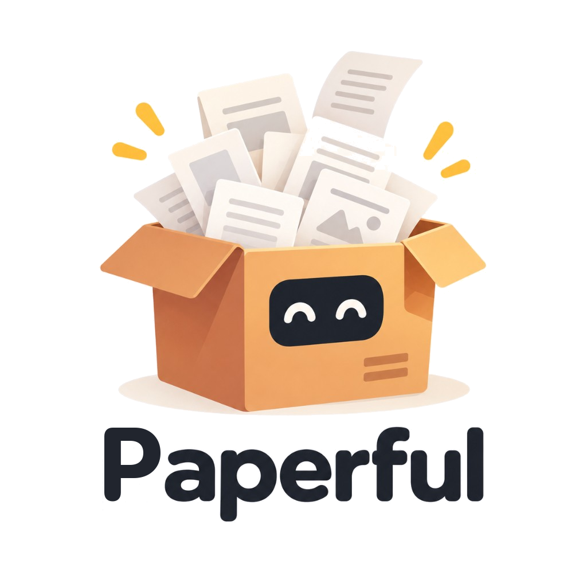
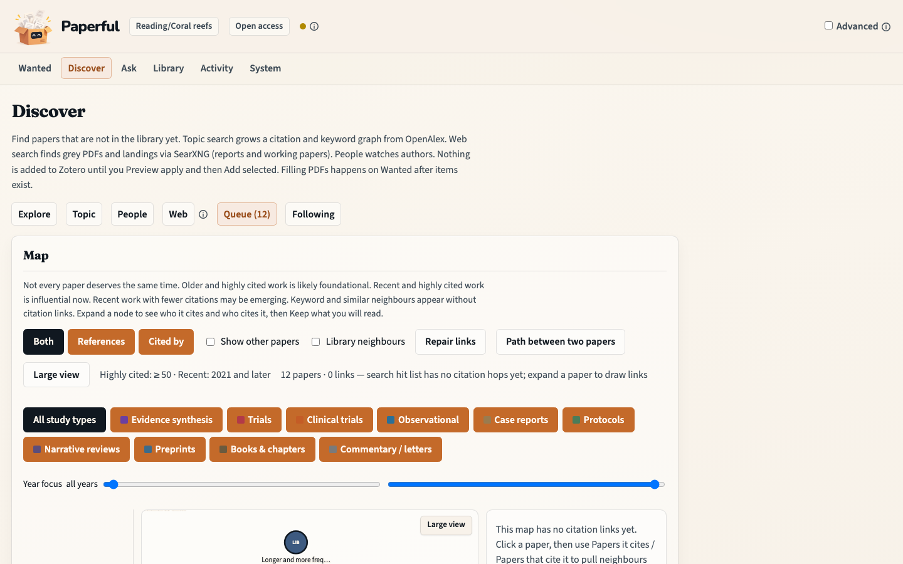
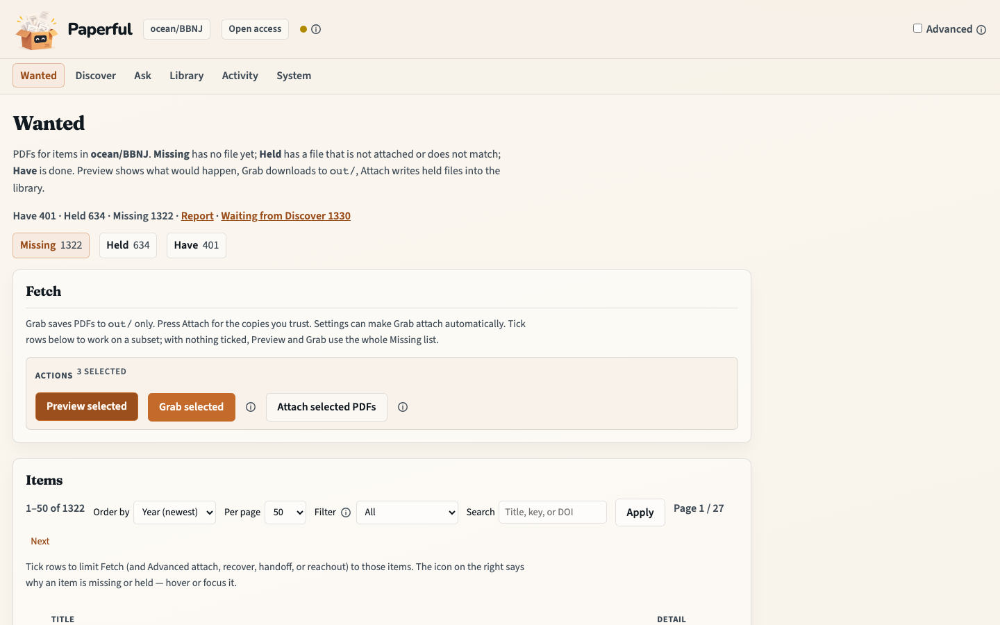
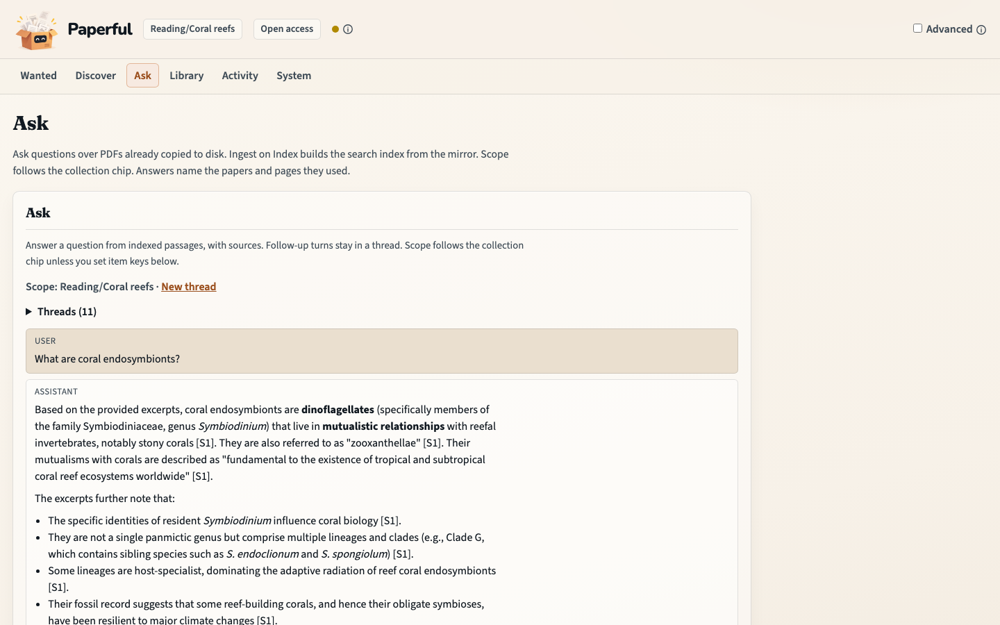
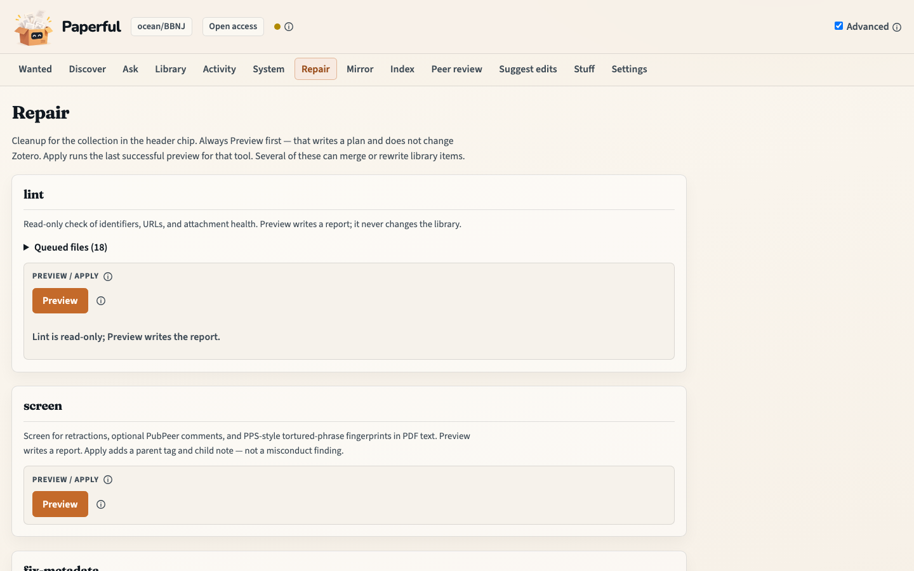

Grow
Discover a topic, follow people, keep watches current. You run the check — or point cron at it.

Files land on this computer, in Zotero, and in a folder you own. Ask the PDFs you already hold. Get writing help on a draft you wrote. Open access first, campus when you have it.
Open-access copies first, campus login when you have it. Grab writes a folder on this computer and attaches when Zotero 10 or newer can write. Zotero stays the catalogue. Optional notes and answers use a model only when you turn one on, and they point back at the PDFs you already hold.
Discover a topic, follow people, keep watches current. You run the check — or point cron at it.
Grab copies into a folder on this machine. On Zotero 10 or newer they attach; Settings can make Attach a separate step.
Questions over PDFs you already hold, answered with a link to the passage.
Peer review, suggest edits, extra-cite suggestions from the index. Help on a draft you wrote — not a paper from scratch.
Land literature on this machine, grow the collection, ask the PDFs you already have, then tidy the records.




There is no Paperful account. The workbench binds to this computer. Downloads, notes, peer-review packs, and the folder copy stay here. Zotero remains the catalogue. Optional AI uses Ollama locally, or an API you chose, and stays off until you turn it on. You copy the folder yourself.
Default nav: Wanted, Discover, Ask, Library, Activity, and System. ⚙️ is Advanced. 🤖 is optional AI (off until you enable it).
| Tool | What it does | Guide |
|---|---|---|
| Discover | Topic search, citation map, Keep/Skip queue, then metadata parents — PDFs still go through Wanted | guide |
| People | Follow ORCID / OpenAlex authors; run the list; accept new works into the collection | guide |
| Web | Grey-literature hits via SearXNG; Preview apply creates parents | guide |
| Research pack | Works cited in a PDF you already hold → parents in the collection → fill PDFs | guide |
| Keepup | Poll topic watches, people lists, and what-cites on a cadence you cron; no email | guide |
| Tool | What it does | Guide |
|---|---|---|
| Ask 🤖 | Questions over PDFs already on disk, answered with a link to the passage; simple or advanced | guide |
| Briefs ⚙️🤖 | Per-item summary and a collection review from the mirror. CLI summarize --receipts drops sentences that cannot quote the PDF |
guide |
| Index ⚙️ | Ingest the mirror, search passages, extract questions, see what is already answered, pull IMRaD-style sections | guide |
| Claim check | Per-sentence support vs the index (CLI ask --claim-check; no chat model) |
guide |
| Evidence | Sourced n / method / finding table over PDFs you hold; each cell is a quote or check this. No chat model. CLI only |
guide |
| Metrics | Citation counts for items already in the library (OpenAlex, then Crossref). Library column + metrics refresh. --apply writes a child note |
guide |
| Tool | What it does | Guide |
|---|---|---|
| Peer review ⚙️ | A draft you already wrote: structure and citations always; unquoted overlap vs held PDFs (quote/cite/review); optional academic discourse; optional claim locators | guide |
| Suggest edits ⚙️ | Apply a peer-review pack as locatable edits / tracked changes; overlap comments name a held item (no cite insert); strip hidden trackers on the copy; never overwrites the source | guide |
| Stuff ⚙️ | Extra library cites per sentence or outline section (needs the index; no chat model) | guide |
| Tool | What it does | Guide |
|---|---|---|
| Wanted | See which items still need a PDF. Preview a search, then Grab onto this computer (and into Zotero 10 or newer; on 7–9 the files stay in the folder) | guide |
| Library | Collection tree with item and missing-PDF counts; the target icon sets the scope for the rest of the workbench | guide |
| Sources | Free copies first (Unpaywall, OpenAlex, and the rest of the open-access lane), campus EZProxy when you choose Campus, playbooks for odd landings | guide |
| Firefox add-on | Save the page you are reading, or several tabs, into the folder copy. The Zotero Connector stays the way to save into Zotero. This one does not attach | guide |
| Recover ⚙️🤖 | Optional browser agent for landings the scripts missed | guide |
| Tool | What it does | Guide |
|---|---|---|
| Repair ⚙️ | Check identifiers, fix metadata, review duplicates, repair attachments, OCR scans, flag retractions / PubPeer / tortured phrases | guide |
| Mirror ⚙️ | Folder copy of the collection; snapshot, restore, sync. You copy the folder when you want a backup or a handoff | guide |
| Import / export | RIS, BibTeX, and EndNote XML | guide |
Full catalog in the guide · Walk through a real job · Ask your library · Peer review a draft · See how it compares
Shortest path: first 10 minutes · first fill with screenshots · all walkthroughs
Docker Compose, Zotero open on the host, workbench at http://127.0.0.1:8765.
git clone --branch v1.9.10 https://github.com/glen-w/Paperful.git
cd Paperful
cp .env.example .env
mkdir -p ../paperful-data ../paperful-out
cp config.minimal.toml ../paperful-data/config.toml # set email
docker compose build
docker compose run --rm paperful doctor
docker compose up
Or without Docker
(PyPI; campus /
HTML PDF needs "paperful[serve,browser]"):
uv tool install "paperful[serve]" # or: pipx install "paperful[serve]"
mkdir my-paperful && cd my-paperful
printf 'email = "you@university.edu"\n' > config.toml
paperful doctor
paperful serve # http://127.0.0.1:8765
Omit --branch v1.9.10 to track latest main.
Docker
·
Zotero
·
First 10 minutes